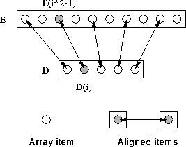

Align each element of D with every second element of E:
REAL, DIMENSION(5) :: D
REAL, DIMENSION(10) :: E
!HPF$ ALIGN D(:) WITH E(1::2)
This says:  i, elements
D(i) and E(i*2-1) are aligned. For example, D(3) and
E(5). Alignment could also be written:
i, elements
D(i) and E(i*2-1) are aligned. For example, D(3) and
E(5). Alignment could also be written:
!HPF$ ALIGN D(i) WITH E(i*2-1)

This alignment is suitable for,
D = D + E(::2) ! All local
For more information, click here